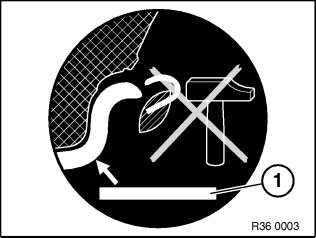

36 00 ... General Information on Light Alloy Disc Wheels
36 00 ... General information on light alloy disc wheels
Note:
It is sometimes difficult to distinguish light alloy disc wheels visually from steel disc wheels.
Identifying features:
- Sticker on light alloy disc wheel. (1) = Indication "Aluminium"
- Wall thickness of rim dish: approx. 8 mm.
- Light alloy disc wheels are not magnetic.
- Light alloy disc wheels can be identified from their BMW parts numbers, refer to BMW Parts Service.
Important!
- Use only BMW-approved two-part balancing weights.
- When fitting two-part balancing weights, always use specified tools.
- Do not straighten light alloy disc wheels: always replace damaged light alloy disc wheels.
- Notches in light alloy disc wheels can lead to cracking.
- Do not lubricate wheel nuts.
- When fitting tires, avoid damaging light alloy disc wheels, e.g. on sharp edged retaining claws on fitting machine.